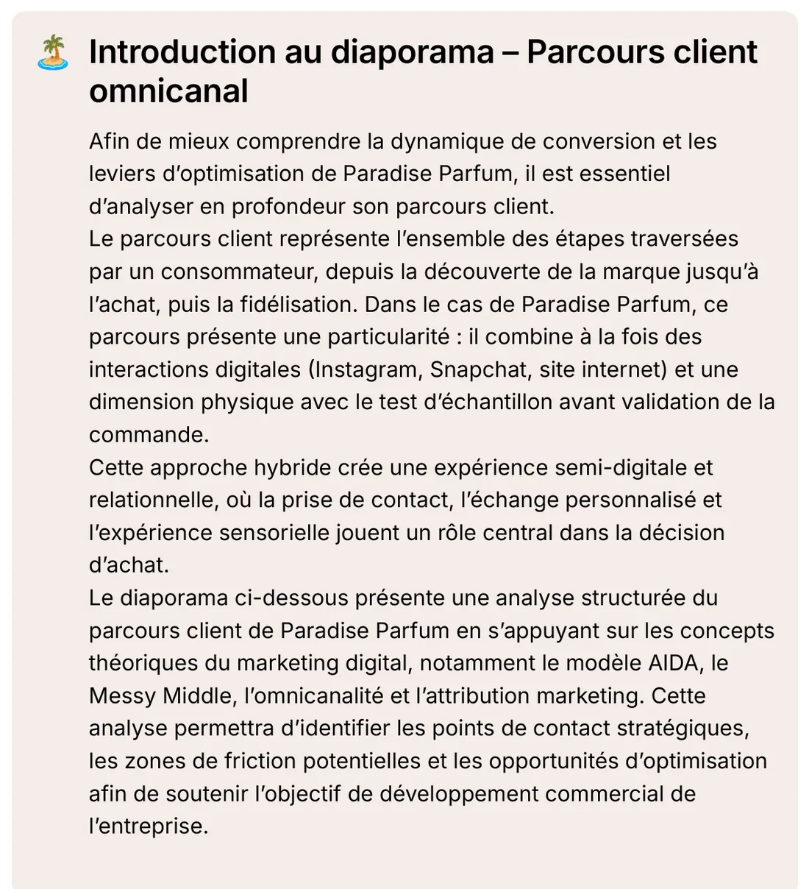
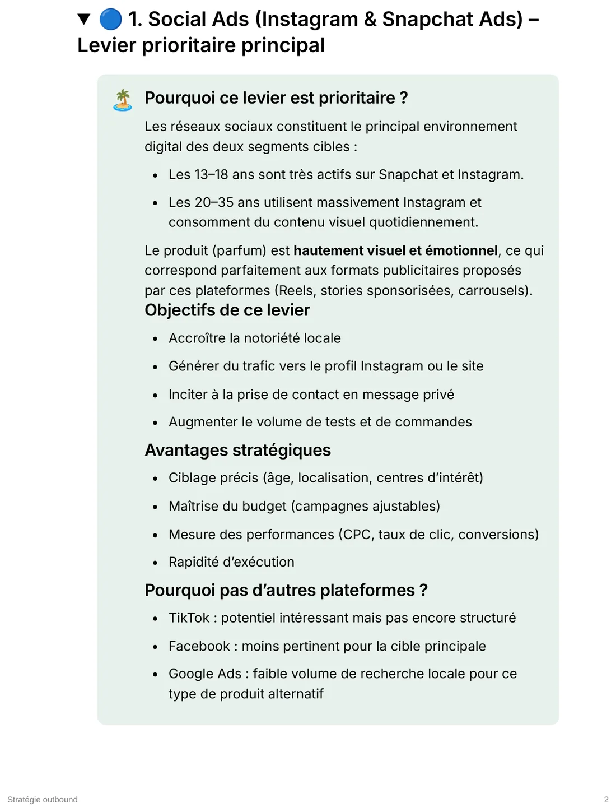

Omnicanal et digital · BC4 · BUT 3
Niveau 2 : Mettre en œuvre la stratégie de marketing omnicanal et digital
Niveau attendu en troisième année : compétent. 2 apprentissages critiques, chacun avec ce qu’il recouvre, la situation où je l’ai travaillé et mes traces.
Apprentissages critiques du niveau 2
- AC34.01MCMO
Appliquer une stratégie omnicanale optimisant la rencontre client/entreprise (identifier les points de contact ; définir les équipements et supports ; définir la stratégie de communication digitale…)
Passer à l’action : cartographier les points de contact, équiper les canaux, définir la communication digitale et mesurer l’effet sur l’expérience client.
Au semestre 6, nous avons joué les consultants en marketing digital pour Paradise Parfum, une marque de parfums inspirés des grandes maisons, vendue sans boutique, sur commande en message privé et avec un test avant achat. Nous avons analysé son parcours client, qui mêle des interactions digitales, Instagram, Snapchat et site internet, et une étape physique, le test d’échantillon avant de valider la commande. Pour relier chaque commande à sa source, nous avons prévu un lien de suivi par point de contact, bio et story Instagram, Snapchat, QR code des flyers, et deux bases sous Notion, l’une pour les prospects en message privé, l’autre pour les commandes. Au semestre 5, nous avions analysé à trois la stratégie inbound de Decathlon, de l’attraction à la fidélisation, selon la méthode affirmation, explication, illustration.
Avec le recul, le parcours et le suivi par source sont conçus, mais ils n’avaient pas encore été mesurés sur une vraie période au moment du rendu.
TracesAudit et stratégie outbound de Paradise Parfum, sous Notion (groupe)Stratégie inbound de Decathlon (trinôme)

Introduction au parcours client omnicanal de Paradise Parfum, extraite du dossier Notion. - AC34.02MCMO
Optimiser le mix digital conforme à la stratégie de l’organisation (formation équipes retail ; participer à l’élaboration de la stratégie inbound et outbound ; mettre en place et animer une communauté à travers les réseaux sociaux, etc.)
Ajuster les leviers digitaux, contenus, référencement, publicité en ligne, animation de communauté, et former les équipes de vente à leur usage.
Dans la stratégie outbound de Paradise Parfum, la publicité sur Instagram et Snapchat est le levier prioritaire, parce que ses deux cibles, les 13-18 ans et les 20-35 ans, y sont très actives ; le retargeting, l’e-mailing et la prospection terrain avec des flyers la complètent. Nous avons écarté Google Ads, le display et les influenceurs nationaux, trop coûteux, peu adaptés ou difficiles à mesurer pour une petite structure locale, et prévu un budget publicitaire de 150 à 300 € par mois, soit 1 500 € sur six mois, avec des indicateurs pour chaque levier. Côté inbound, ma synthèse de la simulation Simbound défend en contexte de crise la création de valeur avant la vente : contenus utiles, nurturing des prospects, preuve sociale et retargeting plutôt que promotions agressives. Au semestre 5, nous avions aussi audité à six le site de CR Qualité : navigation, contenus, appels à l’action et référencement.
Avec le recul, ces leviers sont choisis et chiffrés, mais je n’ai pas encore mesuré leur coût par prospect sur une vraie campagne, et Simbound reste une simulation.
TracesAudit et stratégie outbound de Paradise Parfum, sous Notion (groupe)Synthèse de la simulation Simbound (individuel)Dossier CR Qualité, audit du site (groupe de six)PDF

Pourquoi la publicité sur Instagram et Snapchat est le levier prioritaire de Paradise Parfum. 
Ma synthèse sur l’inbound marketing en contexte de crise, après la simulation Simbound.


Bilan du niveau 2
Points forts : concevoir le parcours client et le mix digital d’une vraie marque, en choisissant les leviers selon la cible, le budget et la possibilité de les mesurer.
À renforcer : la mesure des résultats sur une vraie période, qui reste à faire.
Pour la suite : mettre ces indicateurs à l’épreuve de vraies campagnes, pour passer de la stratégie à l’analyse des performances.